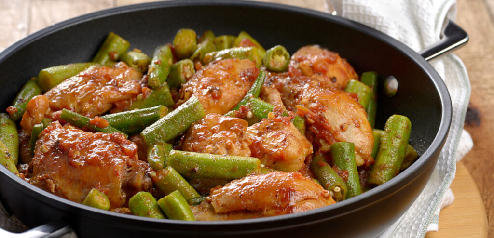

Frango com Quiabo
Um clássico mineiro cheio de sabor! Frango caipira cozido lentamente com temperos caseiros, acompanhado de quiabos frescos no ponto certo. Um prato rústico, suculento e cheio de afeto, perfeito para quem aprecia a verdadeira comida brasileira.